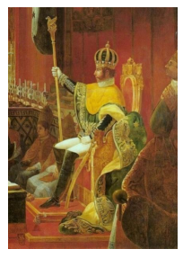

Capítulo 1: Brasil: o processo político-econômico, as transformações sociais e os caminhos percorridos na construção de um Estado moderno.
Na época em que o Brasil tornou-se independente o país possuía uma economia dedicada à exportação de matérias-primas. O mercado interno era muito pequeno, não havia maiores estímulos à produção industrial e nas diferentes regiões do país produziam-se alimentos e criavam-se animais nas vilas e fazendas. Ainda durante o período imperial deu-se início ao processo de modernização do país que passou lentamente a desenvolver o setor industrial. No período republicano cresce o incentivo a indústria fazendo com que desenvolvesse na primeira metade do século XX as bases da moderna economia brasileira. Neste sentido, é importante que ao longo da leitura deste capítulo pensemos nas seguintes questões: Quais os principais fatos políticos do período imperial no Brasil? Como acontece o processo de industrialização do país? Quais os principais eventos políticos, econômicos e sociais da República até o final da Era Vargas?
Contextualizando
Durante o século XIX, até a transição para o século XX, a economia brasileira encontrava-se diretamente ligada ao crescimento e acúmulo de capitais oriundos da empresa cafeeira que se expandia pelo sudeste do país. Contudo, o liberalismo que passou a ser adotado pelo regime monárquico deu o impulso necessário para que a iniciativa privada caminhasse rumo a implementação da produção industrial no país.
Trabalhadores escravos em fazenda de café no Rio de Janeiro: https://br.pinterest.com/pin/33073378490951362/
CONSTRUINDO CONHECIMENTOS
Durante a primeira metade do século XIX foram poucas as fábricas no Brasil, sendo basicamente estabelecimentos de pequeno porte. O empreendedorismo era barrado pela falta de capitais a serem disponibilizados visando o investimento na indústria. Em virtude de tais carências, não havia como se apostar na mudança da economia, além disso, não eram praticados no país um volume considerável de exportações de produtos manufaturados.
Foi somente a partir da promulgação da tarifa Alves Branco no ano de 1844, que se deu o aumento da arrecadação do Estado e o incentivo ao crescimento da indústria nacional.
Neste período a indústria têxtil cresce muito e, graças a estes investimentos, toma a liderança deste processo. Ela é acompanhada do crescimento de outros setores da produção nacional, como é o caso das indústrias metalúrgica, alimentícia, de couros, vestuário e de gêneros de primeira necessidade diversos.
Soma-se a isso a implantação de uma malha ferroviária que passou a ser desenvolvida nos principais centros econômicos do país e que também estimulou o surgimento de novas atividades industriais, principalmente na região sudeste, mas também no sul e nordeste do país. Já na década de 1870 o processo de industrialização do Brasil demonstra vigor e condições de crescimento acima do que vinha sendo observado até aquele momento.

Coroação de Dom Pedro I: http://www.kiaunoticias.com/variedades-aracuai/12-de-outubrodia-de-nossa-senhora-aparecida-dia-das-criancas-e-mais-2-datas
No campo político, a permanência de Dom Pedro no Brasil após
o regresso de Dom João VI a Portugal, viabilizou a
continuidade do regime monárquico.Em meio a instabilidade
vivida diante das circunstâncias do retorno do imperador as
cortes portuguesas, políticos como José Bonifácio de Andrada
e Silva tornaram-se fundamentais na proclamação da
independência. Esta se deu no dia sete de setembro de 1822,
momento em que o Príncipe Regente passou a ser reconhecido
e chamado de Dom Pedro I, Imperador do Brasil.
Com a abdicação de Dom Pedro I ao trono, no ano de 1831, seu filho do mesmo nome, e que tinha apenas cinco anos de idade não pode assumir como imperador, ficando o governo sob a responsabilidade de regentes. Somente no ano de 1840, através da declaração da Maioridade é que Dom Pedro foi aclamado Dom Pedro II Imperador do Brasil, aos 14 anos de idade.
Este período entrou para a história do Brasil com o nome de Segundo Reinado, momento de grandes transformações socioeconômicas e de revoltas que abalaram a integridade nacional e que colocaram o país a frente de disputas territoriais e políticas no cenário regional, como foi o caso da Guerra do Paraguai.
Nesta época, existiam muitas divergências entre conservadores e liberais. Cresciam os movimentos republicano e abolicionista, e nas colunas do exército existiam grupos contrários à continuidade do império. Em meio a um contexto de tensões Dom Pedro II foi destituído da sua condição de Imperador do Brasil, partindo para o exílio acompanhado da sua família. Enquanto isso, os militares que tomam o poder proclamam a República, dando início a uma nova fase da história política do país.
As oligarquias rurais mantiveram durante a República Velha grande força política, o que ocasionou diversos conflitos que marcavam os seus interesses frente às demandas de grupos emergentes, como os trabalhadores assalariados do campo e da cidade.
A promulgação da Constituição de 1891, de inspiração liberal-democrática assegurou a divisão e independência dos três poderes, o regime federativo presidencialista, o direito de propriedade, liberdade de crença, de associação e expressão. Contudo, o voto continuava uma prerrogativa masculina, excluídos mendigos, analfabetos, soldados e religiosos. Se por um lado foram consagrados pela Constituição uma série de direitos civis, o mesmo não aconteceu em relação aos direitos de natureza social.
Movidos pelo processo de industrialização que se expandia, as classes médias urbanas cresceram significativamente, juntamente com o operariado. A vinda de imigrantes, somada ao fluxo migratório do interior para as cidades, alterou a composição da sociedade brasileira.
Greve Geral de 1917
A Greve Geral de 1917 é o nome pela qual ficou conhecida a paralisação geral da indústria e do comércio do Brasil, em Julho de 1917, como resultado da constituição de organizações operárias de inspiração anarcosindicalista aliada à imprensa libertária. Esta mobilização operária foi uma das mais abrangentes e longas da história do Brasil. O movimento operário mostrou como suas organizações (Sindicatos e Federações) podiam lutar e defender seus direitos de forma descentralizada e livre, mas de forte impacto na sociedade. Esta greve mostrou não só a capacidade de organização dos trabalhadores, mas também que uma greve geral era possível. A industrialização fez surgir no Brasil um novo perfil social: O operário fabril. O movimento operário começou a surgir ainda no final do século XIX, mas foi com a industrialização provocada pela Primeira Guerra em nosso país que ele rapidamente se transformou em uma das principais forças políticas de sua época. Ele já em 1917 pode ser visto como um dos maiores movimentos operários do mundo. Nas primeiras décadas do século XX o custo de vida aumentava de forma desproporcional, deixando os trabalhadores em más condições para sustentar suas famílias e fazendo com que as crianças precisassem trabalhar para complementar as rendas domésticas. A questão é como este movimento cresceu tão rápido e se fortaleceu tanto apesar de uma industrialização recente e incipiente. A resposta pode ser encontrada no violento regime de trabalho imposto aos operários na época, comparável somente ao do início da industrialização inglesa cem anos antes. Além disso temos que nos lembrar que a maioria dos operários eram imigrantes italianos e espanhóis com um histórico de organização política anterior. Eram estes, na sua maior parte, anarquistas.
fonte: http://www.infoescola.com/historia-do-brasil/greve-geral-de-1917/
Neste sentido, entre os anos de 1917 e 1920 houve o apogeu do movimento operário no país com mais de duzentas greves de trabalhadores dos mais diversos setores. No âmbito político, o Movimento Tenentista e a Primeira Divisão Revolucionária, mais conhecida como Coluna Prestes, marcha composta em sua maioria por militares de baixa patente que percorreu o interior do Brasil pregando reformas políticas e sociais. Outro tipo de movimento foram os de caráter messiânico, como os de Canudos e, posteriormente, o
Contestado, que misturam ingredientes de misticismo religioso e desamparo social vivido pelas populações do interior do Brasil
Contudo, o maior golpe sofrido pela economia brasileira no período foi a crise econômica internacional do final da década de 1920, resultado da quebra da bolsa de valores de Nova York no ano de 1929. O impacto na economia brasileira foi sentido na medida em que esta viu decair drasticamente a exportação de produtos primários, especialmente o café. Em meio a este contexto, um novo fato político ocorreria no Brasil, a Revolução de 30, considerado como sendo um movimento encabeçado pelos que, ao longo de toda a República Velha viram-se excluídos de participação no poder. Além disso, o fato do governo federal ter dedicado boa parte de seus recursos à proteção do café só fez aumentar o descontentamento de alguns setores econômicos que apoiaram a Revolução.
Assim, com o golpe de Estado, encabeçado por Getúlio Vargas e os segmentos dissidentes do modelo político econômico em vigor, buscou-se implementar uma nova ordem no cenário político nacional, contrariando a dinâmica do poder que alternava-se nas mãos de paulistas e mineiros desde os primórdios da república.
Ainda que não se tenha rompido com os interesses agroexportadores, a política posta em funcionamento no período buscava, através da centralização do poder, viabilizar o pleno desenvolvimento da base econômica urbana, fortalecendo os setores da indústria e do comércio. Entre outras mudanças, destacam-se o incentivo à industrialização.
A partir de 1937, com a implantação do Estado Novo, instaura-se um intenso controle sobre a política no país, expressando-se através da supressão da liberdade partidária e do fechamento do Congresso Nacional. Também recai sobre os trabalhadores o peso do novo regime, suprimindo o direito de greve e a associação sindical.
Acesse o vídeo clicando no link a seguir:
Neste período houve forte interferência estatal através da propaganda e da doutrinação sob diferentes mecanismos divulgação do regime. Foram utilizados maciçamente o rádio e o cinema como meios de divulgaçãodas medidas adotadas pelo governo, trabalhando de forma a criar um pensamento comum entre a população.
Com isto, durante os 15 anos que esteve no poder, Vargas enfrentou uma série de oposições políticas que culminaram com sua deposição no ano de 1945.
Nesta mesma época, Vargas continua a ser uma figura expressiva no cenário político nacional. Nas eleições de 1945 elegeu-se ao Senado e no ano de 1950 foi eleito à Presidência da República, desta vez aclamado pelo voto popular. Este fato pesou contra seus adversários que indignados, buscaram de todas as formas impedir a sua posse
Isto posto, tem-se que o retorno de Vargas à Presidência da República no ano de 1951 foi marcado por uma política nacionalista e forte dirigismo estatal, do qual, o melhor exemplo é a criação da Petrobrás no ano de 1953.
Acesse o vídeo clicando no link a seguir:
Até sua morte, Vargas desfrutou de uma forte simpatia das camadas populares, mas também de parte do empresariado e dos militares nacionalistas, que apoiaram suas medidas de fortalecimento da economia interna através da criação de políticas de controle de determinados setores pelo governo.
Ao longo dos anos, a impopularidade de Getúlio cresceu no meio político. As acusações de corrupção envolvendo políticos próximos e, os excessos como o atentado da Rua Tonelero, só fizeram aumentar a forte crítica perpetrada pela imprensa, especialmente pelo seu maior opositor, o político e jornalista Carlos Lacerda. Seu suicídio, no dia 24 de agosto de 1954, gerou uma onda de protestos.
Juscelino Kubitschek: http://portaldoprofessor.mec.gov.br/fichaTecnicaAula.html?aula=31769
Na controversa carta-testamento divulgada em seu nome, Getúlio acusa seus adversários de serem inimigos do povo. Sua morte freou os ânimos dos oposicionistas, que viram o triunfo do populismo através da reação das camadas populares. Nas eleições presidenciais do ano de 1955, elegem-se dois políticos considerados herdeiros diretos do seu legado, Juscelino Kubitschek como presidente e João Goulart como vice.
AÇÃO E REFLEXÃO – CARTA TESTAMENTO DE GETÚLIO VARGAS
Deixo à sanha dos meus inimigos o legado da minha morte. Levo o pesar de não haver podido fazer, por este bom e generoso povo brasileiro e principalmente pelos mais necessitados, todo o bem que pretendia. A mentira, a calúnia, as mais torpes invencionices foram geradas pela malignidade de rancorosos e gratuitos inimigos numa publicidade dirigida, sistemática e escandalosa. Acrescente-se a fraqueza de amigos que não me defenderam nas posições que ocupavam, a felonia de hipócritas e traidores a quem beneficiei com honras e mercês e a insensibilidade moral de sicários que entreguei à Justiça, contribuindo todos para criar um falso ambiente na opinião pública do país, contra a minha pessoa. Se a simples renúncia ao posto a que fui elevado pelo sufrágio do povo me permitisse viver esquecido e tranquilo no chão da Pátria, de bom grado renunciaria. Mas tal renúncia daria apenas ensejo para com mais fúria, perseguirem-me e humilharem. Querem destruir-me a qualquer preço. Tornei-me perigoso aos poderosos do dia e às castas privilegiadas. Velho e cansado, preferi ir prestar contas ao Senhor, não de crimes que não cometi, mas de poderosos interesses que contrariei, ora porque se opunham aos próprios interesses nacionais, ora porque exploravam, impiedosamente, aos pobres e aos humildes. Só Deus sabe das minhas amarguras e sofrimentos. Que o sangue de um inocente sirva para aplacar a ira dos fariseus. Agradeço aos que de perto ou de longe trouxeram-me o conforto de sua amizade. A resposta do povo virá mais tarde….
O QUE APRENDI
Neste capítulo vimos como o Brasil passou por diferentes situações em relação ao seu regime político durante o século XIX, culminando com a Proclamação da República no ano de 1889. Recuando no tempo, percebemos como ao longo do período imperial a economia dedicada à exportação de matérias-primas foi se modernizando graças aos estímulos do governo para que se desenvolvesse à produção industrial nas diferentes regiões do país.Já no período republicano, cresce o incentivo a indústria fazendo com que se desenvolvesse na primeira metade do século XX as bases da moderna economia brasileira. Ao longo de todo o período estudado vimos diversos eventos políticos que movimentaram a sociedade brasileira, causando crises, mas também avanços no campo econômico, integrando uma grande parcela da população ao novo cenário de crescimento que se apresentava ao país.